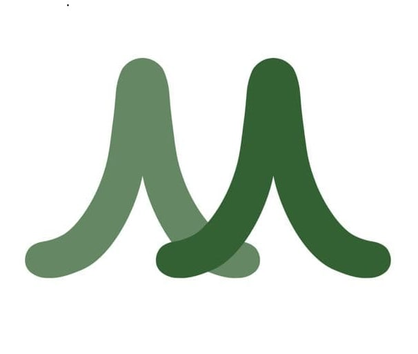
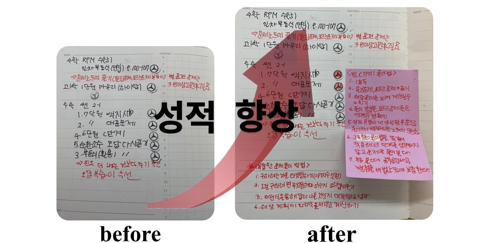

멘토랑
매일 학원 가고 숙제도 끝내는데,
도대체 왜 성적은
제자리일까요?
열심히 다니는데… 성적 그래프는 그대로
공부를 안 해서가
아닙니다.
열심히 하는데 성적이 안 나온다면
'공부하는 방식' 자체를
강력하게 의심해봐야 합니다.
하루 공부 시간의 현실
책상에 앉아 있는 시간
머리에 남는 '진짜 공부'
하지만 대다수의 아이들은
나에게 맞는 공부법을 모른 채
무작정 외우고
정교한 계획과 전략 없이 그저
숙제 때우기에 급급하며
책상에 몇시간을 앉아 있지만
'진짜 공부'는 1시간도 채 못 합니다
운동을 배울 때도
전문 트레이너에게 정확한 자세를
배우고 반복해야 근육이 붙듯,
공부 또한 원리는 똑같습니다
최정상을 찍어본 사람의
'성공 공식'을 그대로 적용
내 것이 될때까지 곁에서 바로잡는
밀착훈련의 반복
국가대표, 프로급 선수들은 이 방법으로
훈련량을 최대로 끌어올립니다
공부 역시
완벽히 똑같습니다.
공부를 제대로 해본 멘토가
옆에 붙어 1:1로 잡아주면,
아이의 공부는 단기간에도
완전히 달라집니다.
지금 대치동 상위권 학생들은
멘토와 1:1로 공부의 시작부터 끝까지
밀착 동행하고 있습니다.
공부를 정상까지 해본 멘토가
우리아이에게 딱 맞춰서
공부의 세세한 부분까지
토탈 과정을 바로잡아 줍니다.
아이의 공부체질부터
바꿔주세요.
멘토랑 1:1 코칭을 시작하세요
"멘토쌤을 그대로 닮아가는 실전 공부법을
함께 공부함과 동시에 하나씩 전수합니다"
각 과목·교재별, 영역별
공부법 밀착 코칭
지문 독해 · 작품 감상법 · 수능형 대비
개념·선행 학습법 · 사고력 노트 풀이 · 오답정리
문법 완성 · 구문 분석 · 단계별 수능독해
전략적 학습 순서 설계 · 1등급 방법 전수
멘토가 펜 끝과 시선을
직접 관찰합니다
비효율적인 풀이 습관, 멍때리는 시간, 잘못된 접근 방식을 그 자리에서 즉시 바로잡아 줍니다.
"무엇을, 왜 모르는지"
근본 원인을 짚어냅니다
막힌 개념을 뚫어주고 최적의 다음 공부 경로를 다시 설계해 줍니다.
아이는 멘토를 닮아가며
온몸으로 체득합니다
똑같은 막막함을 겪고 정상을 밟아본 멘토의 실전 노하우와 마인드셋을 그대로 흡수합니다.
"수동적인 숙제 기계에서,
스스로 해내는 능동적 학습자로"
아이 맞춤형 교재 &
인강·학원 커리큘럼 최적화
남들이 다 본다고 따라 사는 교재는 끝. 현재 레벨에 딱 맞는 교재를 엄선하고 가장 효율적인 테크트리를 짜줍니다.
숙제 처리가 아닌
'진짜 내 공부'로 전환
숙제 때우기식 가짜 공부를 멈추고, 스스로 풀어내 설명할 수 있을 때까지 파고드는 체화형 학습으로 바꿉니다.
압도적인 순공 시간 확보와
자기주도 환경 구축
방황하는 낭비 시간을 없애고, 혼자서도 몰입하는 완벽한 자기주도학습 환경을 만들어냅니다.
"막연한 계획은 그만,
1분 1초가 살아있는 정밀 플래닝"
성적을 확실하게 올리는
학습계획표는 아이마다 따로 있다!

주간 정밀 타임테이블 설계
일주일 단위의 명확한 목표를 세우고, 학교 수업·학원·자습의 균형을 치밀하게 맞춘 주간 스케줄을 함께 설계합니다.
실행 가능한 일일 공부 루틴 안착
오늘 당장 완수할 수 있는 촘촘한 일일 계획. 매일의 성공 경험이 강력한 공부 근력으로 이어집니다.
지속 가능한 습관 형성
벼락치기가 아니라, 기복 없이 매일 일정한 템포를 유지하는 탄탄한 학습 루틴을 정착시킵니다.
"같은 고등학교 선배의 꿀팁으로
내신 1등급 완성"
출신 고교 멘토의
실전 내신 대비
출제 경향과 선생님별 시험 스타일을 꿰뚫는 선배 멘토의 족집게 팁으로 학교별 맞춤 내신을 준비합니다.
수업 집중도 &
시크릿 노트 필기법 코칭
내신의 시작은 학교 수업. 시험에 나올 핵심을 선별해 필기하는 법까지 학업 태도 전반을 지도합니다.
수행평가 올인원 코칭
주제 설정부터 자료 리서치, 보고서 작성과 발표 방식까지 하나하나 함께 코칭합니다.
"흔들리는 수험 생활,
든든한 페이스메이커와의 동행"
같은 길을 걷어본 선배와의 대화
수능 및 장기 입시 로드맵 구축
내신과 수능을 동시에 잡는 장기 전략, 시기별 과목 밸런스를 빈틈없이 조율합니다.
깊이 있는 대화와
진로·진학 멘토링
적성과 진정한 고민을 깊이 나눕니다. 목표가 명확해지면 눈빛부터 달라집니다.
따뜻한 공감과 강력한 멘탈 케어
슬럼프와 불안이 찾아올 때, 같은 길을 걸어간 멘토의 공감과 격려로 끝까지 완주할 힘을 줍니다.
"멘토와 함께 훈련하고 쌓아 올린 노력은
결코 배신하지 않습니다."
단 한두 번의 코칭만으로도
아이들은 입을 모아 말합니다.
"선생님, 저 지금까지
어떻게 공부해야 하는지
진짜 몰랐던 것 같아요."
학원만 다니고 숙제하기에 급급했던 시간을 끝내고,
성공의 경험을 그대로 전수하는 1:1 전담 멘토와 함께
진짜 나의 실력을 만들어보세요.
멘토는 아이의 인생을 바꿉니다!
mentorang.com